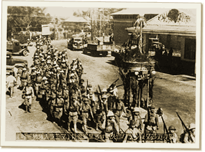

|
j
a v a s c r i p t |
December 30, 1941 — Rizal Day
An abnormally dull day for an official holiday. A messenger dropped a note with season’s greetings from Joe probably written some days ago. With his customary foresight he told us not to expect frequent letters. Was a sponsor at the confirmation ceremony of little Paulie Meyer, where Archbishop O’Doherty gave a terrific sermon against the Japanese. The world today was indignant over the bombing of Manila. Japan was busy explaining while Italy and Germany remained strangely quiet.

Homma's troops entering Tarlac
according to the “Manila Information Bureau No. 1”
The U.S. and Philippine press dwelled on FDR’s use of the word “redeemed” in his speech. While Roosevelt, Sayre and Stimson have been making pretty speeches, MacArthur has been ominously silent. To his credit, Filipino troops are said to fighting mightily; their courage, sky-high; their confidence in the United States, all abounding; their boastfulness upon returning from the front, unending. It’s better that way, though the shock will be greater in the end. Meanwhile, our northern front is now in Pampanga. That’s mighty close! A Washington expert denied the possibility of a “temporary loss” of the Philippines, but the signs have been everywhere: No conscription; no appeal for volunteers ... in fact the ROTC was disbanded and told to go home before Christmas. Then there’s the scorched earth policy: the recent fires in Cavite and Engineer’s Island, the lifting of gas rationing a day before the Pandacan tanks were torched. The signs are unmistakable; they spell out “Occupation.” |
|
|
|
|